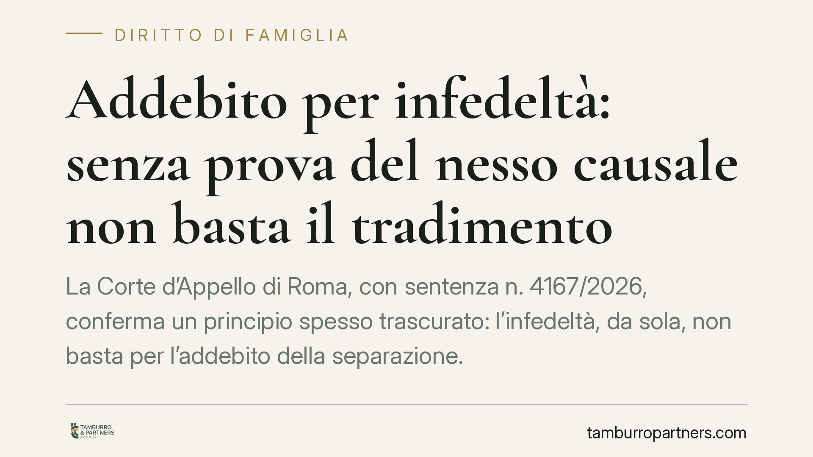

Addebito per infedeltà: senza prova del nesso causale non basta il tradimento
La Corte d'Appello di Roma, con sentenza n. 4167/2026, conferma un principio spesso trascurato: l'infedeltà, da sola, non basta per l'addebito della separazione. Serve dimostrare che il tradimento ha causato la crisi del matrimonio. E le prove tardive non entrano nel processo. Due lezioni concrete per chi affronta una separazione contenziosa.

Il caso
Un coniuge chiede l'addebito della separazione all'altro, ritenuto infedele. In primo grado il Tribunale di Velletri decide; in appello, la Corte d'Appello di Roma, Sezione I, rigetta la domanda con la sentenza n. 4167/2026.
Due le ragioni del rigetto. La prima, sostanziale: chi chiedeva l'addebito non ha provato il collegamento tra l'infedeltà e la rottura del matrimonio. La seconda, processuale: le fotografie prodotte a sostegno della tesi erano state depositate troppo tardi, con la terza memoria istruttoria, e quindi sono state dichiarate inammissibili.
Inquadramento normativo
L'addebito della separazione è previsto dall'art. 151, secondo comma, del Codice civile: il giudice può dichiarare a quale dei coniugi è addebitabile la separazione, quando ne ricorrono i presupposti, in presenza di una condotta contraria ai doveri del matrimonio. Tra questi, l'art. 143 c.c. elenca l'obbligo reciproco di fedeltà.
La violazione di un dovere coniugale, però, non è di per sé sufficiente. La giurisprudenza consolidata richiede la prova del cosiddetto nesso causale: occorre dimostrare che la condotta contestata – qui l'infedeltà – sia stata la causa della crisi coniugale, e non la conseguenza di un rapporto già deteriorato. Se il matrimonio era già in crisi prima del tradimento, l'addebito non spetta.
L'onere di questa prova grava su chi chiede l'addebito, secondo la regola generale dell'art. 2697 c.c.: chi fa valere un diritto in giudizio deve provarne i fatti fondanti.
Sul piano processuale entra in gioco l'art. 183, sesto comma, c.p.c. (nella versione applicabile al giudizio), che scandisce i termini per il deposito delle memorie istruttorie. La terza memoria è riservata alle sole prove contrarie: non è la sede per introdurre prove nuove a sostegno della propria domanda. Le fotografie depositate in quel momento sono quindi tardive e il giudice non può valutarle.
Implicazioni pratiche
Per chi affronta una separazione contenziosa, la sentenza conferma due punti che incidono direttamente sull'esito.
Primo: dimostrare l'infedeltà non equivale a ottenere l'addebito. Servono elementi che colleghino il tradimento alla rottura. Una relazione extraconiugale iniziata quando il legame era già compromesso non produce addebito, perché non è la causa della crisi.
Secondo: la tempistica probatoria è decisiva. Una prova forte, se prodotta fuori termine, diventa inutilizzabile. Il processo civile ha scansioni rigide e la preclusione istruttoria non ammette recuperi successivi. Fotografie, messaggi, testimonianze vanno individuati e prodotti nei momenti corretti, non quando la causa è già avanzata.
La conseguenza economica non è secondaria. L'addebito può incidere sul diritto all'assegno di mantenimento e sui diritti successori. Chiederlo senza costruire una prova solida espone al rigetto e al rischio di condanna alle spese.
Cosa fare in concreto
- Verifica il nesso causale prima di agire. Non basta avere prove del tradimento: raccogli elementi che collochino l'infedeltà come causa, non effetto, della crisi coniugale.
- Ricostruisci la cronologia del rapporto. Documenta quando il matrimonio è entrato in crisi e quando è emersa la condotta contestata. La sequenza temporale è spesso l'elemento che decide la causa.
- Rispetta i termini istruttori. Produci le prove nei tempi previsti dall'art. 183 c.p.c. Consigliamo di preparare il materiale probatorio già nella fase iniziale, senza rinviare.
- Valuta la liceità delle prove. Fotografie, chat e registrazioni devono essere acquisite in modo legittimo: una prova raccolta violando la riservatezza altrui può essere contestata e scartata.
- Confrontati con un legale prima di impostare la domanda. La scelta tra chiedere o meno l'addebito va misurata sulle prove effettivamente disponibili e sui costi del contenzioso.
Un principio che resiste
La pronuncia romana non introduce regole nuove, ma ribadisce con chiarezza che l'addebito non è un automatismo morale. Non premia chi ha subìto il torto in astratto: valuta fatti, nessi e prove regolarmente acquisite. Chi affronta una separazione farebbe bene a ragionare in termini processuali, non emotivi.
Contributo informativo a cura di Tamburro & Partners – Avv. Giuseppe Tamburro. Non costituisce parere legale.
Ogni famiglia ha il suo equilibrio.
Separazione, divorzio, affidamento, assegno: se vuoi un confronto riservato su una specifica situazione, scrivi allo studio. Ti rispondiamo entro un giorno lavorativo.